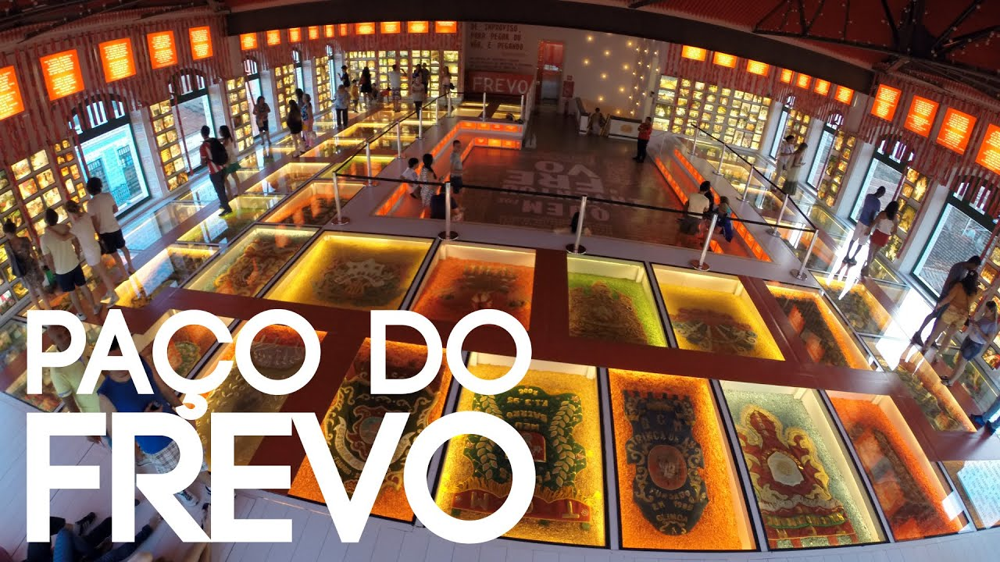

Moderno e interativo, o Museu Cais do Sertão coloca lado a lado a vida simples do povo sertanejo com a tecnologia. O resultado é um primor! Toda a riqueza do Sertão Nordestino é revelada por meio de peças, fotografias, textos e música.
O Museu ocupa um antigo armazém do porto, ao lado do Centro de Artesanato de Pernambuco, que fica por sua vez, ao lado do Marco Zero. Dá para fazer tudo isso a pé, tranquilamente. Eles ficam literalmente lado a lado.
Moderno e interativo, o Museu Cais do Sertão coloca lado a lado a vida simples do povo sertanejo com a tecnologia. O resultado é um primor! Toda a riqueza do Sertão Nordestino é revelada por meio de peças, fotografias, textos e música.
E aproveite para tirar fotos criativas nas paredes e até no chão, que é de vidro com muitas fotos e estandartes das agremiações por baixo.